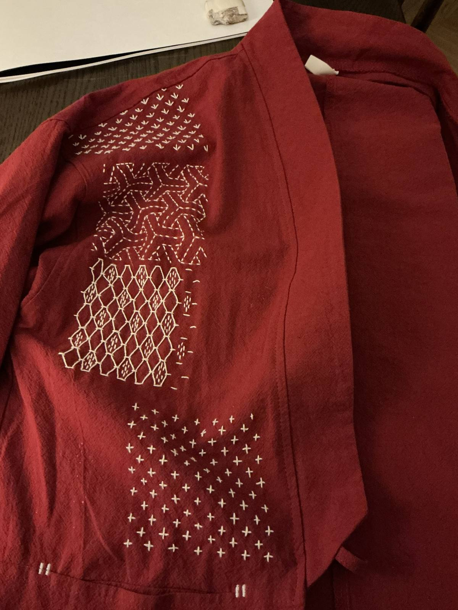

Hello? Can you hear me?
You can? Good. I’m finding it hard to hear myself at the moment. But as long as you can hear me, I’ll keep trying to talk.
I’ve been away for a while. I was traveling which explains some of the break in schedule. But I’ve also been struggling with the never-ending flare and returning to any kind of schedule.
Anything I decide to do in a day is almost definitely not what I end up doing on that day. It’s like a category 5 superstorm of ADHD chaos.
But here I am. Trying to wear a metaphorical poncho and get on with things.
So in the interest of not making this too complicated I’ll keep this week short.
Here are some pictures of the creative practice that I have managed to keep up with. Some sashiko on the hard days and drawing on the better days.
After a live drawing session where I really struggled with proportions, I’ve been learning more about observation vs construction methods of drawing. With construction you build lots of heuristics or approximations of proportions. A human body is typically measured as 7.5 times the height of the head. Halfway through the drawing is the midline of the pelvis. Different instructors seem to have different approximations they like to use so it’s a matter of seeing what works for me. The construction method also relies on some basic understanding of human anatomy – knowing where and how certain major bones and muscles sit in the body. This has been particularly cool for me as I’m already learning a lot about anatomy to manage my HEDS and build more stability and strength. So worlds colliding.

I’m slowly adding patterns to this jacket. For me the back of the pattern looks as interesting as the front and making the back as neat as possible feels important for me for some reason.
Reading a Norse fantasy called The Shadow of the Gods. I’m 400 pages in and only just started to remember which character is who. The plot is picking up now and I’m excited to see how this goes.
The plan for next week is to keep showing up here as I ease back into work.